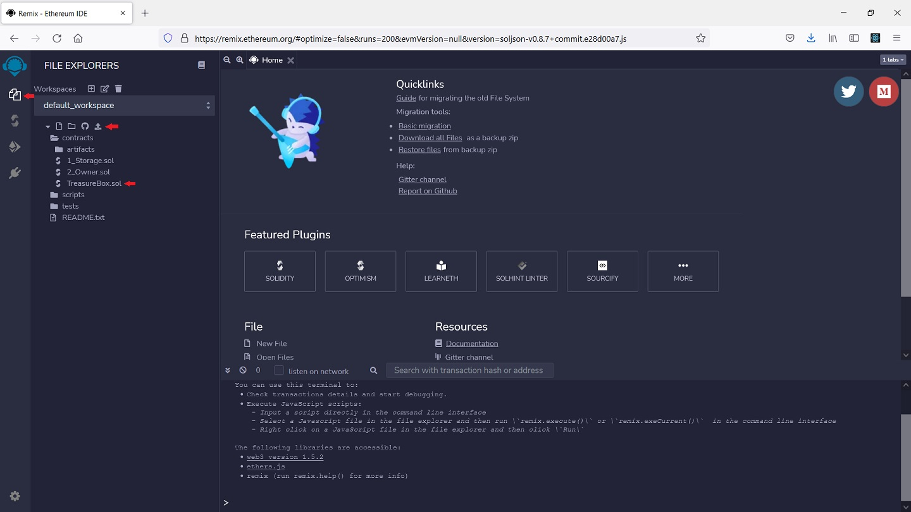
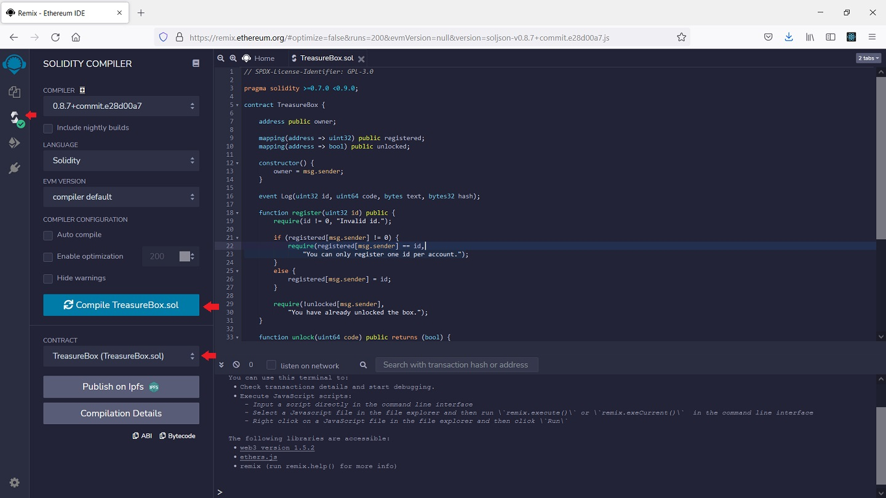
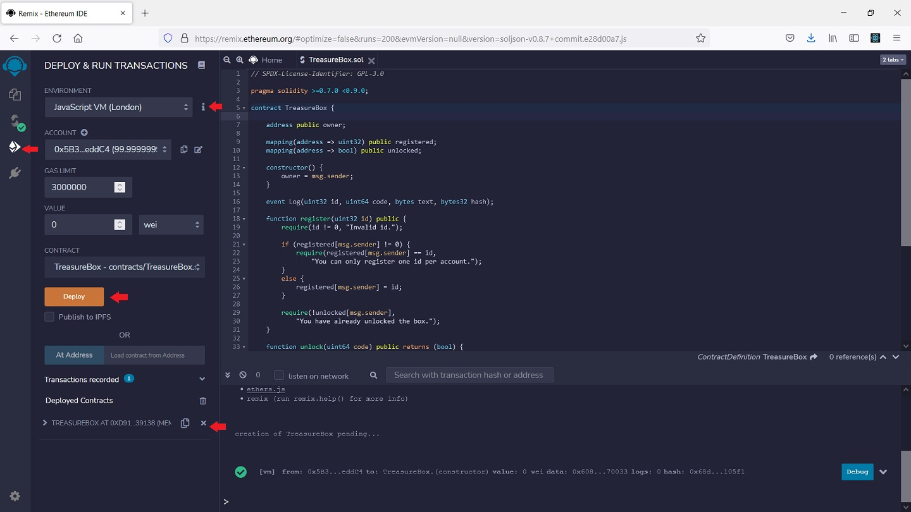
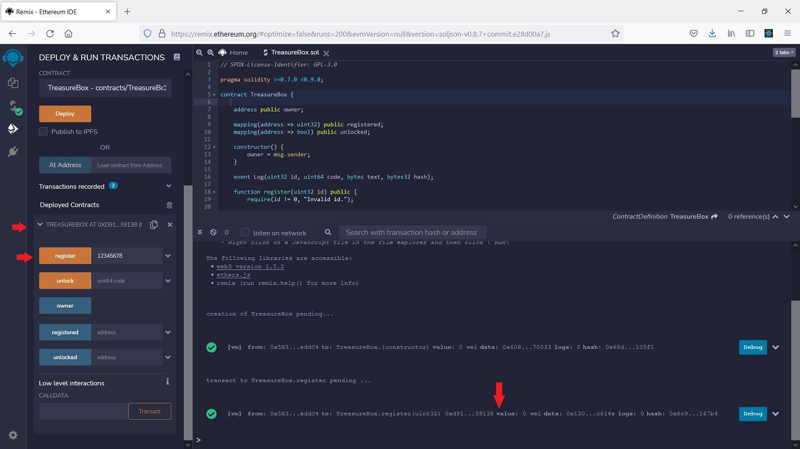
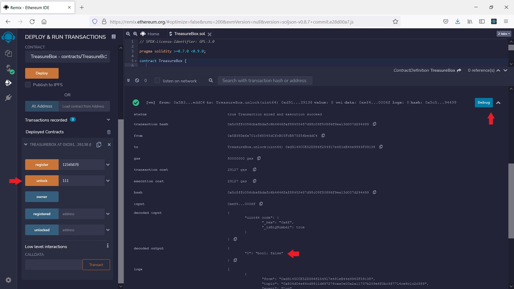
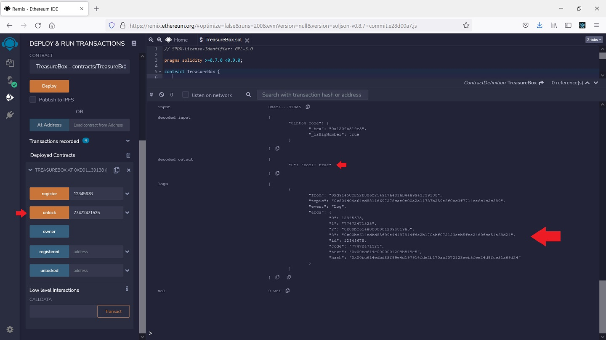
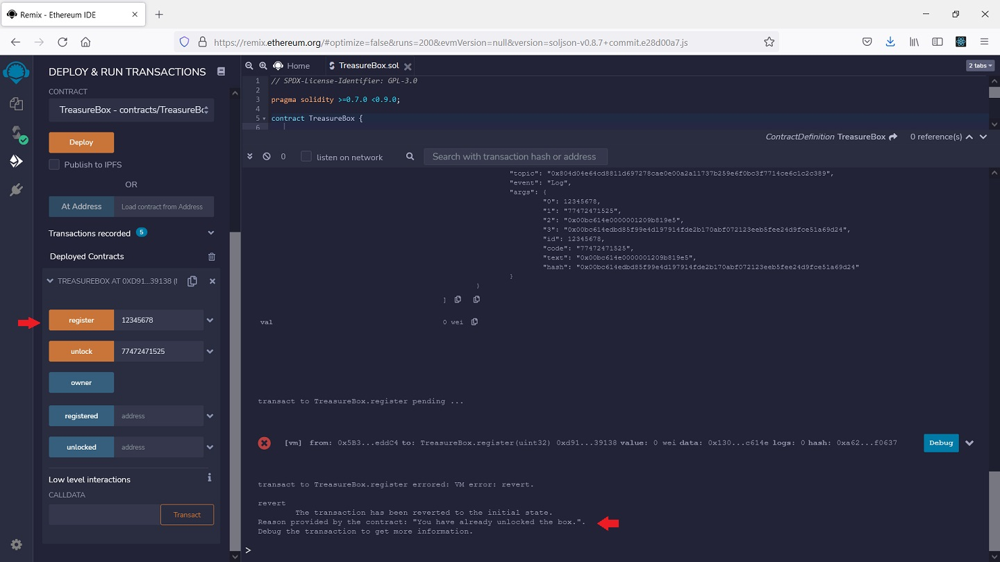
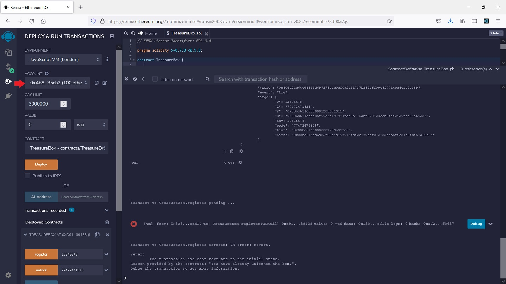

A virual treasure box is created as a smart contract on the Ethereum blockchain. Open it to claim the prize utilizing the knowledge you have learned from this course!
We don't actually require you to deploy smart contracts and to interact with them on the actual Ethereum blockchain as that could cost you real money and is slow for development and testing. As a common practice discussed later, an Ethereum simulator should be used instead.
Here is the smart contract TreasureBox.sol. There are two functions 'register' and 'unlock'. You will need to first call the function 'register' to register your CWID with the treasure box and then call the function 'unlock' to open the box with a code. Once the box is opened, you can call 'register' again, which will generate a message showing you have already unlocked the box.
For example, if your CWID is A12345678, you will call 'register(12345678)' first (the 'register' function only take an interger as the parameter so you don't call it with a string 'A12345678'). The code to open the treasure box for A12345678 is 77472471525 so you will call 'unlock(77472471525)' to open it. Call 'register(12345678)' again to verify the box is open.
The smart contract allows you to call the two functions in any order for any number of times, though it will generate error messages if you don't follow the above protocol.
While not absolutely necessary, testing the smart contract in an Ethereum simulator will be very helpful for you to understand how it works. The most convenient Ethereum simulator is Remix that runs directly inside your browser. I have included a short tutorial on how to use it at the end of this instruction.
Here are what you need to answer in your project report for this section:
Since your CWID is not A12345678, the code to open your box is not 77472471525. What is your code? Clearly you should not modify the smart contract source code to use any code you would like.
You will need to find the code for your CWID for this project. Formulate the condition to unlock the treasure box for your CWID as an equation and write a program to solve it via a brute-force algorithm. You may use part of your program from Project 1. Depending how efficient your program is and whether it can utilize all computational power available on modern multicore processors via multi-threading and multi-processing, it may take from less than a minutes to over an hour to find your code.
Submit a project report in .doc/.docs or .pdf format to Canvas before the deadline, providing the following:
The project should be done individually. You can discuss the project with other students but all the source code and writings should be your OWN. PLAGIARISM and called for DISCIPLINARY ACTION. NEVER share your source code and reports with others.
Use your browser to open Remix. By default it should open "File Explorers" on the left. Use the upload button to upload the smart contract source file.

Open "TreasureBox.sol" from "File Explorers". Move to "Solidity Compiler" on the left. Click "Compile TreasureBox.sol" and then the contract TreasureBox should appear.

Move to "Deploy & Run Transactions" on the left. Make sure the environment is "Remix VM" or "Javascript VM", which creates an Ethereum simulator in your browser. Click "Deploy" and the the contract TreasureBox is deployed to the Ethereum simulator.

Expand the deployed TreasureBox smart contract and you will see the two functions "register" and "unlock". Put "12345678" as the parameter to "register" and click it to call it. A new log messge will appear to confirm that the transaction is completes correctly.

You can then call "unlock" with a code. Using a wrong code like "111" will not cause the transaction to fail but if you check the details of the log message you will see "unlock" returns false, indicating the code is wrong.

If you call "unlock" with the correct code "77472471525", the log message will show "unlock" returning true. Our smart contract also generates additional log messages to help you understand it.

Now if you call "register" again with "12345678", you will get the message "You have already unlocked the box." showing that you have successfully open the box.

The TreasureBox smart contract allows one Ethereum account to register and unlock for a single CWID only. You should change to a different account to test with your own CWID. There is no need to deploy the smart contract again.
